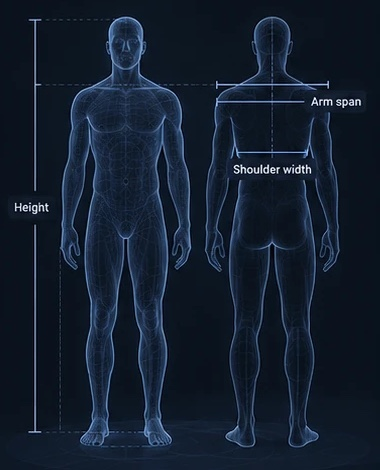

Compare your proportions with Olympic athletes and see which sports and positions give your body a head start.

From Olympic events to the sports popular . Tap one to see the build it rewards.
Start with the basics. Each optional measurement sharpens the result.
How much more common your build is among a sport’s elite athletes than among people in general. “6.6×” means people with your height and build turn up 6.6 times as often among Olympic badminton players as in the general population. Sports are ranked by this number.
How closely you fit the typical athlete in that sport or position. Being inside the middle half of the athletes on a measurement scores full marks. Match drives the limiting factors in the deep dive.
Height and BMI for 27 sports are fitted on Olympic athletes from 1992 to 2016. Arm span, leg, hand, foot and shoulder targets, and sports without Olympic data (climbing, sumo, jockey, coxswain, rugby union, American football, cricket, kabaddi), use published sports-science findings. Team positions are placed around each sport’s real median.
The pose model runs in your browser and the photo is never uploaded. It finds your joints and converts them to centimetres using your height. Early checks put arm span and leg length within a few centimetres; shoulder width uses a correction from a tape-measure comparison.
Full method, trade-offs and data sources: decision log · source code.